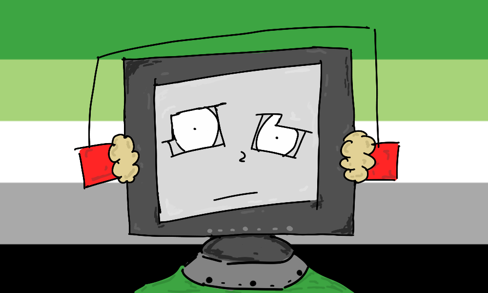

Aromanticism is weird. Someone who is aromantic or aro for short is defined as someone who experiences little to no romantic attraction. Most people don’t know what it is, and for those who do, it stands mostly at best as an abstract concept and nothing more. I figured out I was aromantic about 6 months ago or so. Being aromantic is, well it’s kind of complicated. My immediate instinct would be to say that it sucks, but that’s not the whole truth. For all the parts of being aromantic that suck, there’s also a bunch of things that make it amazing. This is my little attempt at explaining myself, how I’ve learned to experience aromanticism, how it makes me view the world, and hopefully, a little lens to all the alloromantics of the world into how we see the world. This is ultra casual and just from the heart so we’ll see where it goes. I feel like that’s the most genuine representation that I can possibly give. I didn’t know what aromanticism was until the moment I realized that it was who I was. It’s a pretty unknown identity in the larger scheme of the LGBTQIA+ spectrum. But I think we still possess a really unique and valuable perspective.
(sidenote: all of this is from my experience. I speak solely from my miniature perspective. Go speak to more aromantic people and understand more perspectives. This is mine so take everything with a grain of salt.)
Let’s get some misconceptions out of the way. Aromantics can feel attraction, aromantics can view people as attractive, aromantics can have sex, aromantics are, in almost every way, the same as everyone else. Besides one little difference. We don’t feel romantic attraction. Now, I think that’s where most people lose track. For those that do experience romantic attraction I think they oftentimes have difficulty differentiating between romantic and platonic attraction/love. They are two totally separate things, equal in importance, equal in strength, but simply different.
That simple fact is the biggest plight of being aro. Many people, whether they realize it or not, value their platonic relationships at a lesser level than their romantic ones. So, that leaves us as a permanent number two. Never to truly be someone that matters. That when it comes down to it, ride or die, it’s not you. And that hurts like hell. When you choose other people, give them your everything, knowing that no matter what you do, you’ll always be second place.
It’s kind of like what MJF said, “But I know what keeps you up at night. I know what eats you up inside. It's the fact that after all your hard work, all your blood, sweat, tears and sacrifice you've given this sport, deep down you know it and these people know it: your whole career you've been nothing more than second best.” And he’s right. That’s the thing that eats me up inside, the thing that I can’t conquer.
And yeah some people will come and say “what about queerplatonic relationships or platonic life partners” and yeah, that’s great and all, but most people you meet want their life to fit inside the society they were taught to live within. Some of us are brave enough to take the step outside and give the world the middle finger it deserves, but I don’t blame anyone who’s not ready to take that step. Sure, it’s the future I would love, but it’s a future that honestly feels all but unreachable.
Because the more you try, the more you realize that no matter how hard everyone might try to understand you, they just never could. And that’s not on them, it’s not their fault, but it doesn’t mean that it doesn’t hurt. So if you’re anything like me, you start to develop this cynical view of it all.
And when you go to college and realize you’re aro, you realize that you have four years left. Four years where people still value their platonic relationships. Then everyone will begin to move on. They’ll move in with whatever romantic partner they find, and yeah you might still have a relationship, but it’ll never be what it was. It’ll never be those special nights cuddling in bed together hiding from the world together. It’ll never be those intimate moments that didn’t fit into the confines of what society considered friends or romantic partners, it’ll inevitably become what all other platonic relationships do. You’ll become a background character while they remain your number one.
So you’re stuck in this eternal imbalance. This want and need for partnership and love, but stuck behind an impenetrable wall built by people from hundreds of years ago that knew nothing of the kind of person you would be. How’s that fair? Well, it’s not, and that’s just the way it is.
“This business has made me heartless and cold. And this company was the only place I thought I could call home. Born alone, die alone I guess” That’s why I feel like being aro is my curse. It’s my sentence. While it’s fun to blur lines every now and then while I’m still young, I know that has an expiration date. One day, I’m going to have to move on. Try to live in some way. Most likely, that’s going to be alone. And that scares me.
I don’t like being alone anymore. I spent my entire life alone, and now that I’ve gotten to spend it with other people for once, I want to stay here. "I want to run, like you. I want to do something I love. I want to live my life. I want you to see my eyes shine too." And the usual retort is “Well why not just go do it then?” But I hate sounding obnoxious, but you most likely just don’t get it. The feeling of being rejected by every corner of society. The entire structure of a world built on romantic love, partnership, children, and everything else that comes with it.
Hell, even the LGBTQ community largely rejects us. Y’know I thought at first that it would be nice to be a part of the community. I’d always tried my best to support from the outside, but realizing I was a part of it, I was happy to see where I would land. Only to find more hate from the rest of the community than love. While it was nice to find other aro voices, I found that the rest of the community kind of just saw us as the black sheep. But hey, that’s what I’ve been my entire life, guess it’s just another chance to be alone huh.
So then you start falling down the slope again. Thinking about what your parents must have thought before they brought you into this world - “I sentence you to a lifetime of mediocrity. Your life will continue; your career will continue. And it'll be good, but never great. People will like you, but never love you. So you will dwindle; be replaced, and be forgotten. Then one day, many years from now, someone will ask: 'Whatever happened to Mariah May?'”
That’s what I’m afraid of. I don’t want to be remembered by the world. I just want to share love with the people around me until my lights go out, but oftentimes I think that’s probably impossible. I’m going to try my best to keep going. Maybe one day I’ll be proven wrong, but for now, I can see the expiration date. I’m going to make the most of it while I can. I love you guys more than you could ever understand. Let’s keep doing us.
There’s a little more to my identity that I also want to give the necessary space to. Namely, my personal experience with being asexual as well. For me, being asexual is all but irrelevant in my life. It holds no bearing on what I do every day. Since sex is not a priority or even an item on my radar, it feels odd that when I tell people I’m aroace, they often solely attach the ace part of the duo.
It hurts to be identified by a label that means nothing to me. It just adds weight to how little we fit into the larger scheme of the world. A world that focuses its identities on sexual attraction, that places romantic values above platonic in a strict hierarchy. So when people solely see me as ace, I feel invisible. I feel like they don’t understand me. They don’t understand why I say it's worthless to me.
Being aro affects the way I love my friends every day. It adds weight to all my interactions and in my opinion, makes my platonic relationships stronger and more meaningful. So for me to take so much pride in having a deep sense of platonic love only for many people to ignore that part of my identity and just label me as ace feels cruel. That’s not the lens I want to be understood by, but the world loves to infantilize us. To place us in their box and refuse to let us get a word out.
So instead of fighting it all, I’ve learned to just turn my back on it. To just let it be, because I refuse to fight an unwinnable battle. It’s exhausting and demeaning. I can’t change an entire social structure alone, so sometimes it’s been easier for me to accept people at their surface level and instead choose to show my identity through the way I act rather than trying to explain myself or get people to change their behavior. For some more clarity on this in specific, and just the topic as a whole, I’d recommend Jaiden Animations video “Being Not Straight” I think it’s a really digestable, less jaded perspective than what you’re getting here lol.
For all its downsides, there’s just a few stars about being aro to hold onto. While it might be a positive and negative in some regards, it makes your platonic relationships so much more important and intense. That’s such a blessing. You don’t have to balance the weird intricacies of romantic relationships or feel odd when without a romantic partner for periods of time, you simply get to love everyone with your whole heart. Entirely sure that these are the people you want to give it to.
Love surrounds you at all times. The most intense form of love, the love we have for the people we call family, the people whose friendships we value more than any other. That’s something to take pride in. That’s a life I’m proud to live. I give my all to each and every one of my friends each and every day. I never have to doubt for one second if I’m weighing them differently to a romantic partner because they will forever and always be my everything.
It’s lovely to be able to see outside the lines. To embrace the fluidity of life without trying to fit into some rigid structure. I feel like a bird in flight, and sometimes that flight is turbulent, but flying is the gift of a lifetime, so who would I be to doubt it? Sometimes it’s hard to not fit in at all, but that’s how I’ve lived my entire life. So that’s what I’m going to keep doing. I’m going to chase my happiness in whatever way I can and hopefully make this world a little more educated, a little more accepting, and a little more loving along the way.
I also want to say something to everyone that sees us from the outside, and to all my fellow aros too. Sometimes, it’s so easy to get consumed by the label. To let it dictate what we do and who we are, but that defeats the purpose of a label. The label is used to make you feel more comfortable in your skin. Nothing more, nothing less.
Follow your heart and what feels right. We’re never strapped down to one idea or narrative just because we believe that one label at a certain time in our lives fits our feelings best. Live your life to what your heart tells you is best. “Don't let the socials gas you up or let emotions be your crutch. Pick up the phone and bust it up before the history is lost. Hand-to-handshake is good when you have a heart-to-heart”
Follow your heart and fuck what anybody tries to tell you about who you are or who they think you should be. At the end of the day, we’re not here to stand for a label or identity, but to live our lives and find our happiness. That’s all this is about. Don’t let some structure or expectation tear you down. Live your life.
Loading...